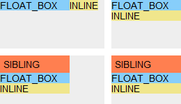

RD8005: Chrome Safari 中浮动元素之前的非 inline 级元素会对包含块的 shrink-to-fit 宽度计算有影响
标准参考
shrink-to-fit 可以理解为“收缩至合适”，代表了浏览器对于计算后宽度为 auto 时的非替换浮动元素宽度计算所要遵循的标准。此外除了非替换浮动元素，对非替换绝对定位元素、非替换行内块元素的宽度为 auto 时也遵循此计算方式。
根据 W3C CSS2.1 规范中的描述，shrink-to-fit 的宽度计算方法与 'table-layout' 特性为 auto（即自动表格布局）时对于单元格的宽度计算方法类似。大致为：
- 计算格式化内容时除了发生明确的换行外不发生换行的时首选宽度（preferred width），以及首选最小宽度（preferred minimum width），比如，尝试所有可能的换行。而 CSS2.1 没有定义精确的算法。
- 其次，在这种情况下，找出可用宽度（available width），这个宽度为包含块减去 'margin-left'、'border-left-width'、'padding-left'、'padding-right'、'border-right-width'、'margin-right'以及所有相关滚动条的宽度。
综上所述：
shrink-to-fit 的宽度 = min ( max (首选最小宽度, 可用宽度) , 首选宽度)
关于 shrink-to-fit 的更多资料，请参考 CSS2.1 规范 10.3.5 Floating, non-replaced elements 中的内容。
问题描述
在 Chrome Safari 中，若浮动元素之前存在一个非 inline 级元素（包括 block、table 等），且它们的包含块 'width' 特性计算值为 auto，则包含块的 shrink-to-fit 宽度计算会出现错误。
造成的影响
此问题可能导致未明确设置宽度的遵循 shrink-to-fit 算法的包含块的宽度计算错误，导致布局发生异常。
受影响的浏览器
| Chrome Safari |
|---|
问题分析
分析以下代码：
<body style="font:14px/1.1 Arial;">
<div style="position:absolute; left:10px; top:10px; width:150px; height:70px; background:#eee;">
<div id="cont1" style="position:absolute; background:khaki;">
<div style="float:left; background:lightskyblue; width:100px;">FLOAT_BOX</div>
<span>INLINE</span>
</div>
</div>
<div style="position:absolute; left:170px; top:10px; width:100px; height:70px; background:#eee;">
<div id="cont2" style="position:absolute; background:khaki;">
<div style="float:left; background:lightskyblue; width:100px;">FLOAT_BOX</div>
<span>INLINE</span>
</div>
</div>
<div style="position:absolute; left:10px; top:90px; width:150px; height:70px; background:#eee;">
<div id="cont3" style="position:absolute; background:khaki;">
<div style="background:coral; padding:5px;">SIBLING</div>
<div style="float:left; background:lightskyblue; width:100px;">FLOAT_BOX</div>
<span>INLINE</span>
</div>
</div>
<div style="position:absolute; left:170px; top:90px; width:100px; height:70px; background:#eee;">
<div id="cont4" style="position:absolute; background:khaki;">
<div style="background:coral; padding:5px;">SIBLING</div>
<div style="float:left; background:lightskyblue; width:100px;">FLOAT_BOX</div>
<span>INLINE</span>
</div>
</div>
</body>
上面代码分为 4 组，左上角、右上角、左下角、右下角分别对应第 1、2、3、4 组。
- 第一组【cont1】：【cont1】为绝对定位元素1，且没有明确设定宽度，则其 'width' 特性的计算值为 auto。此时【cont1】的宽度计算遵循 shrink-to-fit 算法。【cont1】的包含块宽度为 150px。【cont1】内含有一个宽度为 100px 的浮动元素及一个行内元素。
- 第二组【cont2】：【cont2】同样为绝对定位元素，宽度计算也遵循 shrink-to-fit 算法。【cont2】的包含块宽度为 100px。【cont1】内含有一个宽度为 100px 的浮动元素及一个行内元素。
- 第三组【cont3】：【cont3】同样为绝对定位元素，宽度计算也遵循 shrink-to-fit 算法。【cont3】的包含块宽度为 150px。与上面两组不同，【cont3】在浮动元素前面还多了一个没有设定宽度的块级元素 “SIBLING”。
- 第四组【cont4】：【cont4】同样为绝对定位元素，宽度计算也遵循 shrink-to-fit 算法。【cont4】的包含块宽度为 100px。【cont4】内的结构与第三组相同。
在各浏览器中的运行效果如下：
| IE62 IE7 IE8 Firefox Opera | Chrome Safari |
|---|---|
 |
 |
注 1. 对于浮动元素（float:left|right）及行内块元素（display:inline-block）有相类似的现象。
注 2. 这里忽略了 IE6、IE7(Q)、IE8(Q) 中浮动元素后面会多出 3px 的 Bug。
从截图可以看出第 1、2 组在各浏览器中没有任何差异，这里各浏览器对【cont1】及【cont2】的 shrink-to-fit 宽度计算均符合 W3C 规范。
下面重点看第 3、4 组中的差异：
- 在 IE6 IE7 IE8 Firefox Opera 中，【cont3】的 首选最小宽度、可用宽度、首选宽度 分别为：100px、150px、141px。则【cont3】的 shrink-to-fit 宽度为：min ( max ( 100, 150 ), 141 ) = 141px。
【cont4】的 首选最小宽度、可用宽度、首选宽度 分别为：100px、100px、141px。则【cont3】的 shrink-to-fit 宽度为：min ( max ( 100, 100 ), 141 ) = 100px。
可以看到这几种浏览器此时对【cont3】与【cont4】的 shrink-to-fit 宽度计算正确。 - 在 Chrome Safari 中，【cont3】的 shrink-to-fit 宽度也被计算为了 100px。
下面尝试为浮动元素之前的块级元素“SIBLING”明确地设置一个宽度：
<div style="position:absolute; left:10px; top:200px; width:150px; height:70px; background:#eee;">
<div id="cont3" style="position:absolute; background:khaki;">
<div id="sibling" style="background:coral; padding:5px; overflow:hidden;">SIBLING</div>
<div style="float:left; background:lightskyblue; width:100px;">FLOAT_BOX</div>
<span>INLINE</span>
</div>
</div>
<script>
function $(id) { return document.getElementById(id); }
var sibling = $(“SIBLING”);
var k = 0;
setInterval(function () {
sibling.style.width = k++ + "px";
(k > 200) && (k = 0);
}, 50);
</script>
上面代码与第三组相同，通过一段脚本控制 “SIBLING” 的宽度，从 0 至 200px 变化，观看【cont3】的宽度变化：
| IE6 IE7 IE8 Firefox Opera | Chrome Safari |
|---|---|
 |
 |
从动画中可以看出，当块元素“SIBLING”的宽度比【cont3】的 首选宽度 小的时候，Chrome 和 Safari 中其容器 shrink-to-fit 宽度会出现计算错误。
当块元素“SIBLING”的宽度比【cont3】的 首选宽度 大时，表现的则与其他浏览器相同。
此外，将“SIBLING”的 'display' 特性改为其他非 inline 级别的值，如 table、table-cell 等也会出现类似的现象。即使是替换元素，在其 'display' 特性值为 'block' 时也可能出现此现象。
解决方案
在容器为绝对定位、浮动或行内块元素且没有明确设定宽度时，若浮动元素之前出现非 inline 级元素，则要小心这个元素对容器 shrink-to-fit 宽度的影响。可以为容器明确的设定一个宽度。
参见
知识库
相关问题
测试环境
| 操作系统版本: | Windows 7 Ultimate build 7600 |
|---|---|
| 浏览器版本: |
IE6 IE7 IE8 Firefox 3.6.8 Chrome 5.0.472.0 dev Safari 5.0 Opera 10.60 |
| 测试页面: | stf_case.html |
| 本文更新时间: | 2010-07-28 |
关键字
width float shrink-to-fit 宽度